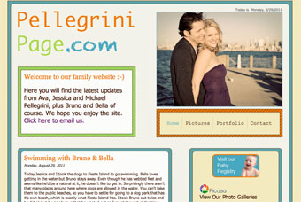

My name is Michael Pellegrini and I am a web designer in San Diego, CA. The purpose of this site is to showcase my design and development work on various recent projects. I've been doing web design for nearly ten years now and absolutely love it. My main skills lie in the realm of front–end design and development, ie: HTML, CSS, and jQuery, plus Search Engine Optimization and technical writing. I love working with Adobe Photoshop, Fireworks and Dreamweaver as well. I think my favorite thing about web design is the combination of creative skills and technical skills it requires. I guess you could say it keeps both sides of my brain happy. Please enjoy the sites listed below. If you would like to contact me, please click here.
Welcome to my personal website
Pulpcore

This site was designed for San Diego ‘Pulpcore’ artist David Russell Talbott. David was looking for a new website with a modern feel that would do his artwork justice. The idea was to give the site a dark, sinister vibe that was easy to read and navigate, but wouldn’t distract the visitor from his pieces.
All design elements were handled with CSS, keeping the HTML clean and efficient. The image scroller on the home page was done with jQuery.
Visit the site at: www.DavidRussellTalbott.com
Search Engine Optimization

This is a website that I've been wanting to do for quite a while. While working at Business Marketing Services in Seattle I did extensive research on Search Engine Optimization. In addition to building websites for our clients, we offered SEO services to help get their sites to the top of the search engine listings. One of my duties as lead web developer was to optimize our client's existing sites as well as build new sites with optimal search engine ranking in mind.
After several years working on SEO related projects, I felt it was time to put together my own series of articles outlining the steps towards creating a successful SEO campaign. I feel that this site not only showcases my abilities in building a business oriented website, but also my skills as a technical writer and SEO specialist.
Visit the site at: www.PellegriniPage.com/Portfolio/SEO
Sidecar
Sidecar is a website I designed to showcase a restaurant concept that I've been building in my head for years. It started with the logo you see on the right and turned into a complete vision. Although it's doubtful that Sidecar will ever actually become a real restaurant, it was a fun project to develop.
The site is full of high resolution graphics and lots of jQuery bells and whistles. It was definitely not meant to be bandwidth friendly but I must admit that there is a certain sense of freedom that comes with including a 400k graphic on your site just because it looks cool! I hope you like it.
Visit the site at: www.PellegriniPage.com/Portfolio/Sidecar
Pellegrini Family Website

This site, which is basically my personal blog, was designed to keep our family and friends up to date on our lives in San Diego. My wife Jessica and I have family all around the country, and since we're expecting our first child soon, we wanted to keep them up–to–date on her pregnancy, plus all the other fun things we have going on. I thought about doing this with Facebook or Wordpress but decided to build my own instead. Facebook seemed a little too public, plus I wanted to do something that would make for a nice portfolio piece.
The idea for this site was to be very colorful and playful. Something our baby girl could be proud of. I also wanted to try out a few new CSS3 and jQuery tricks I had learned. As always, the markup is lean and clean, with CSS handling all design elements and jQuery, JavaScript plus a little PHP adding dynamic functionality to the site.
Visit the site at: www.PellegriniPage.com